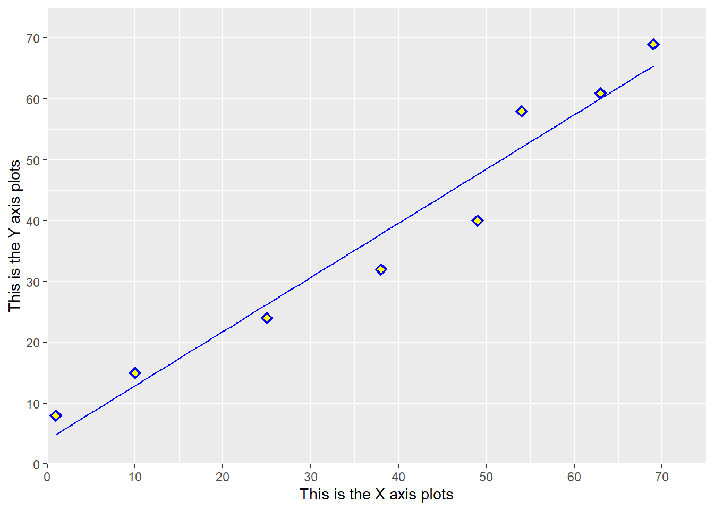

library(ggplot2)
X_axis<-c(1,10,25,38,49,54,63,69)
Y_axis<-c(8,15,24,32,40,58,61,69)
data_plot<-data.frame(X_axis,Y_axis)
scatter<-ggplot(data_plot, aes(x=X_axis,y=Y_axis))+
geom_point(shape=18, size=4,color="blue")+
geom_point(shape=18, size=2,color="yellow")+
geom_smooth(method="lm",se=FALSE, color="blue", size=.5)+
xlab("This is the X axis plots")+
ylab("This is the Y axis plots")+
coord_cartesian(xlim=c(0,75), ylim=c(0,75))+
scale_x_continuous(breaks=seq(0,75,10), expand=c(0,0))+
scale_y_continuous(breaks=seq(0,75,10), expand=c(0,0))Warning: Using `size` aesthetic for lines was deprecated in ggplot2 3.4.0.
ℹ Please use `linewidth` instead.scatter`geom_smooth()` using formula = 'y ~ x'